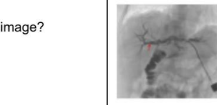
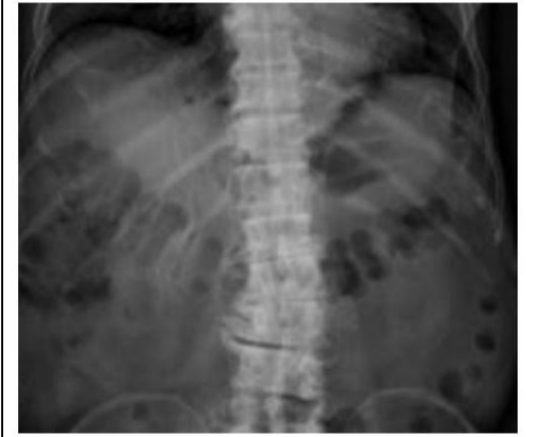
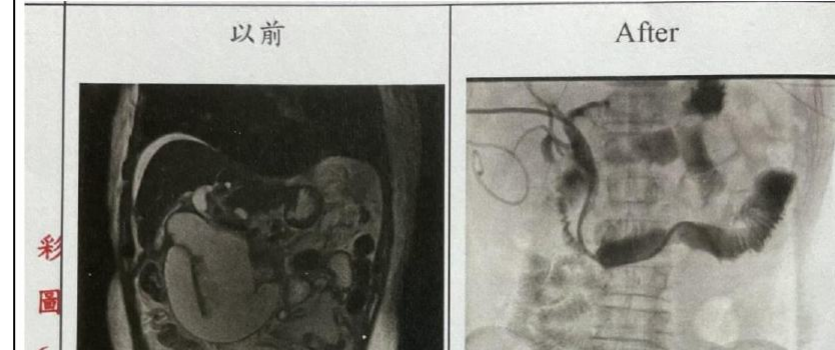
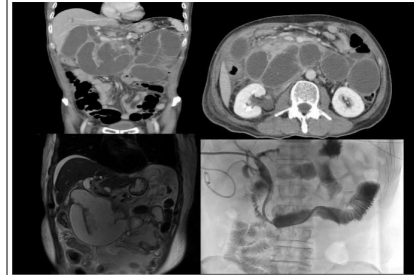
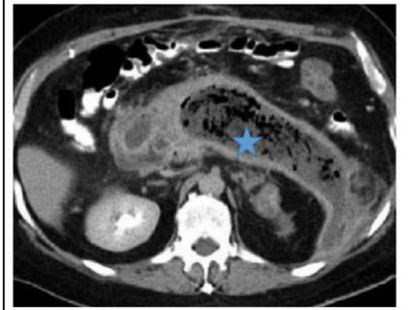
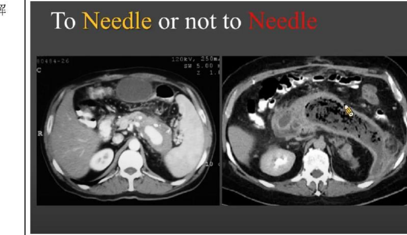
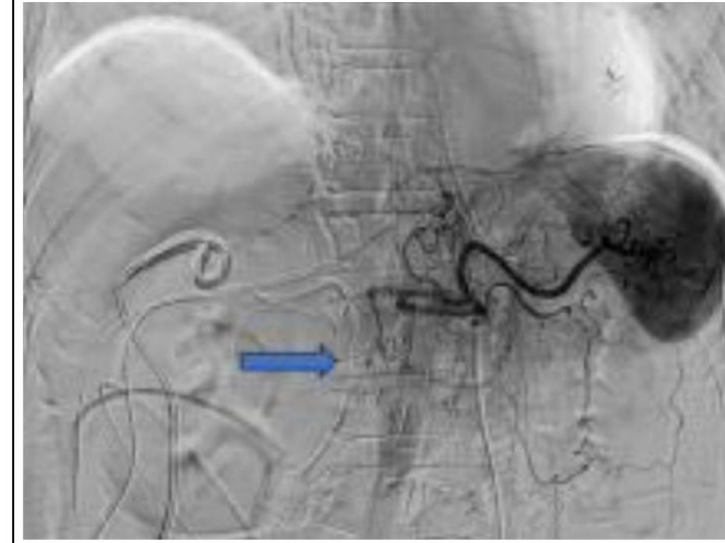
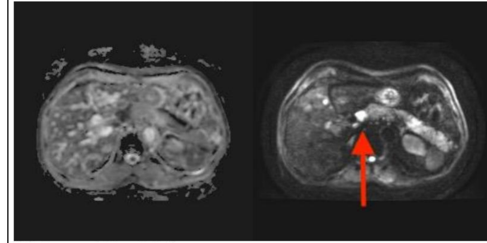
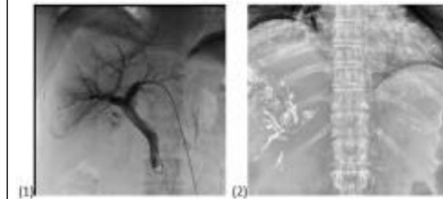
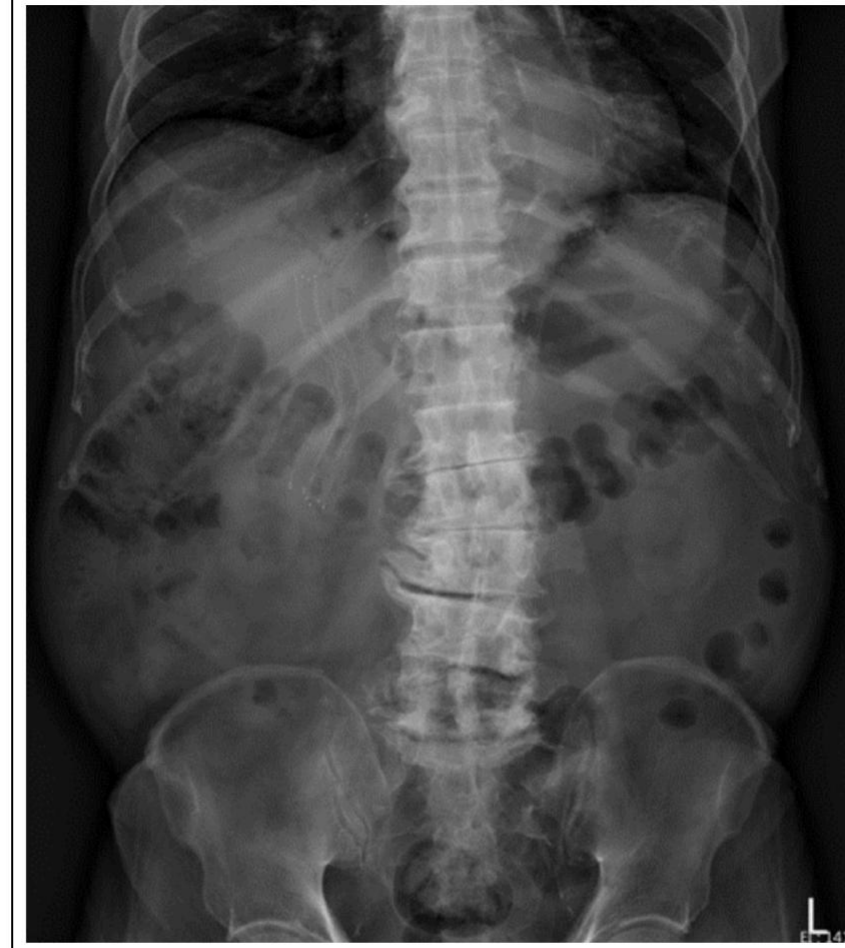

膽道系統介入解剖與支架放置路徑
核心考點：Q34 (Afferent loop PTCD)Q66 (肝外膽道支架)Q68 (肝管辨識)
石明誠老師的膽道影像題，關鍵在於掌握「管道走向與匯入器官」：
1. 膽道管道三秒辨識法
| 管道類型 | 走向與影像特徵 | 判讀關鍵與排除法 |
|---|---|---|
| 肝管 / 膽道系統 (Hepatic duct) | 深入肝內實質成樹枝狀分支，向下匯流並進入消化道（十二指腸）。 | 所有血管（肝動脈、門靜脈、肝靜脈）都絕不會通入十二指腸！看到管道流入腸道一律選膽管（Q68）。 |
| 肝外膽道金屬支架 (Metallic stent) | 在 KUB / X 光上呈現金屬網狀管狀結構，沿著肝臟下緣、朝膽道走向延伸（跨越總肝管與總膽管至十二指腸）。 | 用於惡性膽道阻塞引流（Q66）。 |


2. Afferent Loop Syndrome 的經膽管介入通路 (PTCD)
胃切除術（如 Billroth II 或 Roux-en-Y）後若發生輸入環阻塞（Afferent loop syndrome），介入放射科除了經胃或直接穿刺外，可利用 **PTCD 經由膽管 (Bile duct)** 順行進入阻塞腸段，放置引流管與跨越狹窄之金屬支架。


對於 afferent 環綜合症的介入性選擇具有不同的通路，包括通過膽管和胰管直接穿刺 afferent 絆，甚至在內鏡超聲(EUS)引導下使用腔腔支架經胃引流裝置。根據附圖，您認為我們已經為患者提供了緩解腹痛的開始通行路線？
- (A) 膽管 (Bile duct)
- (B) 胃 (Stomach)
- (C) 胰腺 (Pancreas)
- (D) 脾 (Spleen)
病人由右側經皮穿肝，利用 PTCD 技術經由膽管 (Bile duct) 進入狹窄之輸入環放置金屬支架與引流管。由解剖位置排除胃、胰腺或脾臟。
胰腺後腹腔病灶與血管攝影栓塞
核心考點：Q35 (胰腺馬賽克氣體)Q45 (胰背動脈假性動脈瘤)
1. 胰腺壞死與馬賽克氣體收集 (Mosaic Gas Collection)
腹部 CT 上於後腹腔之十二指腸與**胰腺 (Pancreas)** 區域出現斑駁的「馬賽克狀氣體收集 (Mosaic gas collection)」，提示胰腺壞死、產氣菌感染性膿瘍 (Abscess) 或腸道穿孔。穿刺引流時必須落實 "To Needle or not to Needle" 評估，應從病患側腹部 (Flank approach) 進針，避開前方腹腔器官。


2. 出血性假性動脈瘤與胰背動脈 (Dorsal Pancreatic Artery)
重症胰臟炎釋出強烈消化酵素侵蝕動脈壁，可引發假性動脈瘤破裂出血。腹腔動脈幹 (Celiac trunk) 造影下，由主幹/脾動脈近端向下分支供應胰腺之 胰背動脈 (Dorsal pancreatic artery) 為最典型之出血動脈，可經導管動脈栓塞術 (TAE) 止血。

Which vessel causing pseudoaneurysm do you think bleeding is?（您認為圖中藍色箭頭所指之出血性假性動脈瘤是由什麼血管引起的？）
- (A) Right gastric a. 右胃動脈
- (B) Left gastric a. 左胃動脈
- (C) Common hepatic a. 肝總動脈
- (D) Dorsal pancreatic a. 胰背動脈
血管攝影清晰顯示假性動脈瘤源自供應胰腺本體之後方支脈 —— 胰背動脈 (Dorsal pancreatic artery)，為課堂強烈強調之血管栓塞焦點。
MRI 擴散序列判讀：DWI 與 ADC
核心考點：Q46 (總膽管 DWI/ADC 訊號)
• DWI (擴散加權成像)：水分子移動受限處呈現高訊號（變亮 / Bright）。
• ADC (表觀擴散係數圖)：定量水分子擴散能力，擴散受限處呈現低訊號（變暗 / Dark）。
• 臨床意義：「DWI 亮 ＋ ADC 暗」代表真正的擴散受限（如惡性腫瘤、細胞密度極高處或濃稠發炎膿瘍）。若兩者皆亮則僅為 T2 shine-through 假陽性。

TACE 與碘油 (Lipiodol) 沉積排除原則
核心考點：Q67 (TACE 碘油沉積部位)
1. TACE (經動脈化療栓塞) 的血流動力學基礎
肝臟具有雙重血供：正常肝實質 75% 血流來自門靜脈，而**肝細胞癌 (HCC) 幾乎 100% 依賴肝動脈**供血。TACE 將化療藥與高密度油性顯影劑 Lipiodol (碘化油) 注入肝動脈。
2. 碘油 (Lipiodol) 會保留在哪裡？不會在哪裡？
| 會出現 / 滯留之組織與管道 | 絕對不會出現 (Except for) |
|---|---|
|
① 右肝動脈 (Right hepatic artery)：注入途徑。 ② 右肝實質與腫瘤 (Right hepatic cellular parenchyma)：沉積標的。 ③ 右門靜脈 (Right portal vein)：因腫瘤內部常見動脈-門脈分流 (Arterio-portal shunt) 逆流入門靜脈末梢。 |
膽道總管 (Common bile duct) 原因：膽道系統為膽汁排泄管道，**非血管系統**，動脈打入之碘油絕對不會流入或保留於膽道總管內（Q67）！ |


影像導引切片 (Biopsy) 安全路徑規劃
核心考點：Q69 (切片應避開之構造)
影像導引（CT 或超音波）穿刺切片時，以下構造均必須嚴格避開（All of the above should be avoided）：
- 血管 (Vessels)：穿刺損傷會導致嚴重內出血、血胸、腹腔積血或假性動脈瘤（最危險併發症！）。
- 膽囊 (Gallbladder)：刺破會造成膽汁外漏，引發劇烈且致命的膽汁性腹膜炎 (Biliary peritonitis)。
- 胰臟 (Pancreas)：刺破會導致胰液酵素外漏，誘發急性壞死性胰臟炎與胰廔管。
- 腸道與肋膜：避免腸穿孔腹膜炎與氣胸。
一分鐘考前秒殺心法（石明誠老師 8 大口訣）
- 管道通腸道：深入肝內且分支匯入十二指腸者＝肝管 (Hepatic duct)（血管絕不會通十二指腸）。
- 金屬支架位置：KUB 沿肝下緣走向延伸者＝肝外膽道支架 (Extrahepatic biliary stent)。
- Afferent loop 介入：經皮穿肝由 膽管 (Bile duct / PTCD) 穿入輸入環打通狹窄放置支架。
- 馬賽克氣體：後腹腔 CT 斑駁產氣位於 胰腺 (Pancreas)，引流採側腹入路 (To Needle or not)。
- 假性動脈瘤：Celiac trunk 造影指向胰腺出血動脈＝胰背動脈 (Dorsal pancreatic a.)。
- MRI 擴散受限：DWI 亮 ＋ ADC 暗＝後腹腔胰頭匯入處病灶為 總膽管 (Common bile duct)。
- TACE 碘油沉積：保留於肝動脈、肝實質與門靜脈分支，「除了」膽道總管 (Common bile duct)。
- 切片安全禁忌：血管（出血）、膽囊（膽汁腹膜炎）、胰臟（胰臟炎）全部必須避開。
歷屆考古題全收錄（共 8 題完整題庫含附圖）
石明誠老師 消化系統介入性放射線學題庫全解
完整收錄歷年 8 道影像專題試題，每題均附原版醫學影像附圖、標準答案與深度解析。
Therapeutic release management of afferent loop syndrome have different options and which one does interventional radiology provided for patent in below images?
（對於 afferent 環綜合症的介入性選擇具有不同的通路，包括通過膽管和胰管直接穿刺 afferent 絆，甚至在內鏡超聲(EUS)引導下使用腔腔支架經胃引流裝置。根據以下附圖，您認為我們已經為患者提供了緩解腹痛的開始通行路線？）
- (A) 膽管
- (B) 胃
- (C) 胰腺
- (D) 脾
• 影像與解析：題目圖片與石明誠老師課堂講解照片相同。
• 左圖 (以前)：從影像學可看出十二指腸因阻塞而出現明顯擴張的情形。
• 右圖 (After)：病人經由 PTCD 做介入性治療，除了放置引流管打通狹窄處，也使用了金屬支架橫架其中。透過觀察引流管的放置位置可知介入的通行路線從病患右側進入，經由 bile duct (膽管) 一路延伸至腸道。由解剖概念刪去法可知非經由胃、胰腺或脾臟。
Where do you think the mosaic gas collection location is / 認為馬賽克氣體收集位置（星）是？
- (A) 膀胱
- (B) 胰腺
- (C) 脾臟
- (D) 胃
• 影像與解析：依據老師 ppt 及上課口述內容，此張圖所呈現的 mosaic gas collection 可能為壞死組織、糞便或膿瘍 (abscess)，位置在十二指腸及胰腺 (Pancreas)，屬於後腹腔，應從病患側面 (Flank approach) 做引流。
Which vessel causing pseudoaneurysm do you think bleeding is?
（你認為這種出血假性動脈瘤是由什麼血管引起的？）
- (A) Right gastric a. 右胃動脈
- (B) Left gastric a. 左胃動脈
- (C) Common hepatic a. 肝總動脈
- (D) Dorsal pancreatic a. 胰背動脈
• 影像與解析：老師上課強烈暗示此為 Dorsal pancreatic a. (胰背動脈)。導管置於腹腔動脈幹 (Celiac trunk)，藍色箭頭明顯指向從主幹分支出來向下走向胰腺之假性動脈瘤出血點，可藉由介入性放射科導管栓塞止血。
What do you assume the most bright up retroperitoneum lesion under DWI and dark in ADC images arising from (arrow)?
（您認為 DWI 下的變亮病變和 ADC 圖像中的暗病變代表什麼？）
- (A) Common bile 總膽管
- (B) pancreatic tail 胰尾
- (C) duodenum 十二指腸
- (D) Gallbladder 膽
• 影像與解析：從圖中可以知道，橫向亮亮的那條是胰臟，而總膽管會和胰管一起匯入 12 指腸，故箭頭所指位於後腹腔匯入處之病變為總膽管 (Common bile duct)。DWI 亮 + ADC 暗代表組織擴散受限（惡性腫瘤或濃稠感染）。
Where do you think the metallic stent being mainly placed?
（您認為金屬支架主要放置在哪裡？）
- (A) Common hepatic artery 肝總動脈
- (B) Main portal vein 主門靜脈
- (C) Extrahepatic biliary tract 肝外膽道
- (D) Duodenum bowel 十二指腸
• 影像與解析：金屬支架位於肝臟下緣往下延伸，沿著總肝管與總膽管走向跨入十二指腸，放置於肝外膽道 (Extrahepatic biliary tract)，用於引流惡性阻塞性黃疸。
According to the right (mark as 1) pre and left (label 2) post interventional radiology treatment images, where do you think the embolization lipiodol dense material retained, except for
（根據右(標記為 1)介入放射治療前和左(標記為 2)介入放射治療後影像，您認為栓塞碘油緻密物質保留在哪裡，除了：）
- (A) right portal vein 右門靜脈
- (B) 右肝動脈 right hepatic artery
- (C) 右肝實質 right hepatic cellular parenchyma
- (D) common bile duct 膽道總管
• 影像與解析：首先 (A) 選項門靜脈可以剔除，因門靜脈流向會向心，且腫瘤常有動脈-門脈分流使碘油逆流至門靜脈末梢。另外兩圖互相比較能發現注入與沉積的血管及實質，但膽道總管 (Common bile duct) 屬於膽汁引流系統、非血管，絕無法顯現碘油沉積，因此選擇 (D)。
圖中箭頭所指的構造是什麼管道？
What is the duct indicated by the arrow in this image?
- (A) 肝動脈 Hepatic artery
- (B) 肝門靜脈 Hepatic portal vein
- (C) 肝管 Hepatic duct
- (D) 肝靜脈 Hepatic vein
• 影像與解析：圖中的管道深入肝內分支，且有一分支流入類似消化道的管道（十二指腸）。所有血管（肝動脈、門靜脈、肝靜脈）均不可能通入十二指腸，所以只能選肝管 (Hepatic duct)。
在做影像導引切片時，需要避開哪些組織或器官？
When performing an imaging-guided biopsy, what tissues or organs should be avoided?
- (A) 血管 Vessels
- (B) 膽囊 Gallbladder
- (C) 胰臟 Pancreas
- (D) 以上構造均須避開 All of the above should be avoided.
• 解析：
• 戳到血管 ＝ 內出血、假性動脈瘤。
• 戳到膽囊 ＝ 膽汁滲漏造成膽汁性腹膜炎。
• 戳到胰臟 ＝ 胰液滲漏造成急性壞死性胰臟炎與胰廔管。
做影像導引切片時，重點為：Shortest path to lesion, cross fewest and least critical structures，故以上構造均須避開。